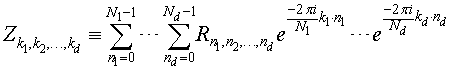

Intel® oneAPI Math Kernel Library Developer Reference - Fortran
Depending on the value of the DFTI_FORWARD_DOMAIN configuration parameter, the implementation of FFT supports several storage schemes for input and output data (see document [3] for the rationale behind the definition of the storage schemes). The data elements are placed within contiguous memory blocks, defined with generalized strides (see DFTI_INPUT_STRIDES, DFTI_OUTPUT_STRIDES). For multiple transforms, all sets of data should be located within the same memory block, and the data sets should be placed at the same distance from each other (see DFTI_NUMBER_OF TRANSFORMS and DFTI_INPUT DISTANCE, DFTI_OUTPUT_DISTANCE).
FFT Examples demonstrate the usage of storage formats.
For the DFTI_COMPLEX forward domain, both input and output sequences belong to a complex domain. In this case, the configuration parameter DFTI_COMPLEX_STORAGE can have one of the two values: DFTI_COMPLEX_COMPLEX (default) or DFTI_REAL_REAL.
In the Intel® oneAPI Math Kernel LibraryFFT interface, storage schemes for a forward complex domain and the respective backward complex domain are the same.
With DFTI_COMPLEX_COMPLEX storage, complex-valued data sequences are referenced by a single complex parameter (array) AZ so that a complex-valued element zk1, k2, ..., kd of the m-th d-dimensional sequence is located at AZ[m*distance + stride0 + k1*stride1 + k2*stride2+ ... kd*strided] as a structure consisting of the real and imaginary parts.
This code illustrates the use of the DFTI_COMPLEX_COMPLEX storage:
complex :: AZ(N1,N2,N3,M) ! sizes and number of transforms
...
! on input: Z{k1,k2,k3,m} = AZ(k1,k2,k3,m)
status = DftiComputeForward( desc, AZ(:,1,1,1) )
! on output: Z{k1,k2,k3,m} = AZ(k1,k2,k3,m)
With the DFTI_REAL_REAL storage, complex-valued data sequences are referenced by two real parameters AR and AI so that a complex-valued element zk1, k2, ..., kd of the m-th sequence is computed as AR[m*distance + stride0 + k1*stride1 + k2*stride2+ ... kd*strided] + √(-1) * AI[m*distance + stride0 + k1*stride1 + k2*stride2+ ... kd*strided].
This code illustrates the use of the DFTI_REAL_REAL storage:
real :: AR(N1,N2,N3,M), AI(N1,N2,N3,M)
...
! on input: Z{k1,k2,k3,m} = cmplx(AR(k1,k2,k3,m),AI(k1,k2,k3,m))
status = DftiComputeForward( desc, AR(:,1,1,1), AI(:,1,1,1) )
! on output: Z{k1,k2,k3,m} = cmplx(AR(k1,k2,k3,m),AI(k1,k2,k3,m))
The Intel® oneAPI Math Kernel LibraryFFT interface supports only one configuration value for this storage scheme: DFTI_REAL_REAL. With the DFTI_REAL_REAL storage, real-valued data sequences in a real domain are referenced by one real parameter AR so that real-valued element of the m-th sequence is located as AR[m*distance + stride0 + k1*stride1 + k2*stride2+ ... kd*strided].
The Intel® oneAPI Math Kernel LibraryFFT interface supports two configuration values for this parameter: DFTI_COMPLEX_REAL (default) and DFTI_COMPLEX_COMPLEX. In both cases, the conjugate-even symmetry of the data enables storing only about a half of the whole mathematical result, so that one part of it can be directly referenced in the memory while the other part can be reconstructed depending on the selected storage configuration.
With the DFTI_COMPLEX_REAL storage, the complex-valued data sequences in the conjugate-even domain can be reconstructed as described in section DFTI_PACKED_FORMAT.
Although DFTI_CONJUGATE_EVEN_STORAGE=DFTI_COMPLEX_REAL is the default setting for the DFTI_REAL forward domain, avoid using this storage scheme. This storage scheme is deprecated for one-dimensional transforms and the default will change in a future release. For two-dimensional transforms, this storage scheme is deprecated, support will be removed, and the default will change in a future release.
With the DFTI_COMPLEX_COMPLEX storage, the complex-valued data sequences in the conjugate-even domain are referenced by one complex parameter AZ so that a complex-valued element zk1, k2, ..., kd of the m-th sequence can be referenced or reconstructed as described below.
Use the DFTI_CONJUGATE_EVEN_STORAGE=DFTI_COMPLEX_COMPLEX configuration setting, which will become the default in future. This setting is supported for all transform ranks, provides a uniform pattern for reconstructing the entire conjugate-even sequence from the part of it that is actually stored, and is compatible with data layouts supported by other FFT libraries, such as FFTW. This storage scheme disregards the setting of DFTI_PACKED_FORMAT.
Consider a d-dimensional real-to-complex transform

Because the input sequence R is real-valued, the mathematical result Z has conjugate-even symmetry:
zk1, k2, ..., kd = conjugate (zN1-k1, N2-k2, ..., Nd-kd),
where index arithmetic is performed modulo the length of the respective dimension. Obviously, the first element of the result is real-valued:
z0, 0, ..., 0 = conjugate (z0, 0, ..., 0 ).
For dimensions with even lengths, some of the other elements are real-valued too. For example, if Ns is even,
z0, 0, ..., Ns /2, 0, ..., 0 = conjugate (z0, 0, ...,Ns /2, 0, ..., 0 ).
With the conjugate-even symmetry, approximately a half of the result suffices to fully reconstruct it. For an arbitrary dimension h, it suffices to store elements zk1, ...,kh, ..., kd for the following indices:
The symmetry property enables reconstructing the remaining elements: for kh = [Nh /2] + 1, ... , Nh- 1. In the Intel® oneAPI Math Kernel LibraryFFT interface, the halved dimension is the first dimension.
The following code illustrates usage of the DFTI_COMPLEX_COMPLEX storage for a conjugate-even domain:
real :: AR(N1,N2,M) ! Array containing values of R
complex :: AZ(N1/2+1,N2,M) ! Array containing values of Z
...
! on input: R{k1,k2,m} = AR(k1,k2,m)
status = DftiComputeForward( desc, AR(:,1,1), AZ(:,1,1) )
! on output:
! for k1=1 … N1/2+1: Z{k1,k2,m} = AZ(k1,k2,m)
! for k1=N1/2+2 … N1: Z{k1,k2,m} = conj(AZ(mod(N1-k1+1,N1)+1,mod(N2-k2+1,N2)+1,m))
For the backward transform, the input and output parameters and layouts exchange roles: set the strides describing the layout in the backward/forward domain as input/output strides, respectively. For example:
... status = DftiSetValue( desc, DFTI_INPUT_STRIDES, fwd_domain_strides ) status = DftiSetValue( desc, DFTI_OUTPUT_STRIDES, bwd_domain_strides ) status = DftiCommitDescriptor( desc ) status = DftiComputeForward( desc, ... ) ... status = DftiSetValue( desc, DFTI_INPUT_STRIDES, bwd_domain_strides ) status = DftiSetValue( desc, DFTI_OUTPUT_STRIDES, fwd_domain_strides ) status = DftiCommitDescriptor( desc ) status = DftiComputeBackward( desc, ... )
For in-place transforms, ensure the first element of the input data has the same address as the first element of the output data for each dimension.